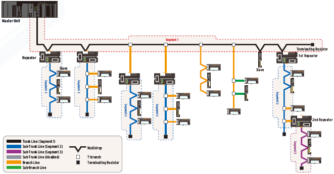
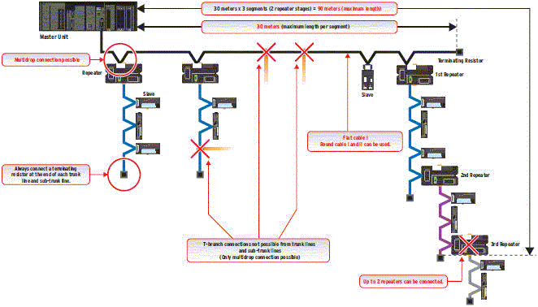
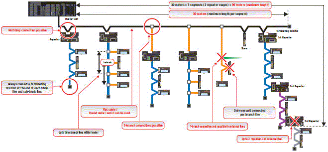
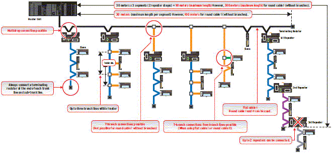
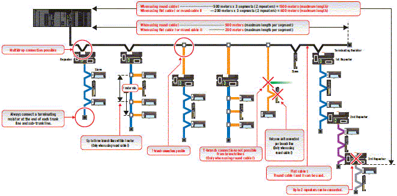
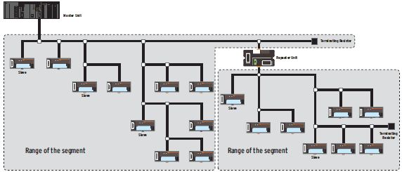

There are four CompoNet baud rates, from 4 Mbps ultra-fast mode to 93.75 kbps long-distance mode.
The wiring specifications depend on the baud rate. Select the one that best matches your application.
Building Automation
Industrial Automation
Power Automation & Safety


Bangladesh Distributor
CompoNet
Open Network for High-Speed Control

CompoNet offers the ideal mix of high speed, ample capacity, and ease-of-use needed to let you build the best machine.
about this Product Family
Related Contents
- Automation Systems
- Features
- Lineup
- Specifications
- Dimensions
- Catalog
last update: May 11, 2016
Network Specifications
CompoNet is made up of segments divided by repeater unit.

| Baud rate | Cable type |
Trunk line and sub-trunk line length (When 2 repeaters are used.) |
Number of slaves per segment (Including number of repeaters) |
Branch line length |
Total branch line length per segment |
Branch location restrictions |
Number of slaves per branch line |
Sub- branch line length |
Total sub- branch line length per segment |
|
|---|---|---|---|---|---|---|---|---|---|---|
| 4Mbps | Round cable I, II Flat cable I |
30m (90m) | 32 | --- | --- | --- | --- | --- | --- | |
| 3Mbps | Round cable I, II Flat cable I |
30m (90m) | 32 | 0.5m | 8m | 3/meter | 1 | --- | --- | |
| 1.5Mbps | Round cable I |
Without branches |
100m (300m) | 32 | --- | --- | --- | --- | --- | --- |
| With branches |
30m (90m) | 32 | 2.5m | 25m | 3/meter | 3 | --- | --- | ||
| Round cable II Flat cable I |
30m (90m) | 32 | 2.5m | 25m | 3/meter | 3 | 0.1m | 2m | ||
| 93.75kbps | Round cable I | 500m (1500m) | 32 | 6m | 120m | 3/meter | 1 | --- | --- | |
| Round cable II Flat cable I |
200m (600m) | 32 | 200 meter free wiring total wire length per segment | |||||||
Relation between Baud Rate and Communications Cable
The Cable that can be used and the required baud rates are automatically determined by whether a trunk line-branch line formation or an unrestricted wiring formation is used.
| Cable type | Baud rate | |||
|---|---|---|---|---|
| 4Mbps | 3Mbps | 1.5Mbps | 93.75kbps | |
| Round cable I | Trunk line-branch line wiring formation (See note 1.) |
Trunk line-branch line wiring formation |
Trunk line-branch line wiring formation |
Trunk line-branch line wiring formation |
| Round cable II | Unrestricted wiring formation | |||
| Flat cable I | ||||
Note: (1) If a baud rate of 4 Mbps is used, branching is not possible from the trunk line. (Only multidrop connections are possible.)
The following table shows the conditions and restrictions for each formation.
| Item | Wiring formation | |
|---|---|---|
| Trunk line-branch line formation | Unrestricted wiring formation | |
| Master Unit location | End of network | Anywhere in network (not necessarily at the end) |
|
Maximum number of Slave Units connected to any one branch line |
1 or 3 depending on the cable type and baud rate | No restrictions |
| Terminating Resistor location | On the opposite ends of the trunk line and all sub- trunk lines from the Master Unit and each Repeater Unit |
On the most remote ends from the Master Unit and each Repeater Unit |
Example of wiring for 4Mbps (Application: Ultra-fast communications)

Example of wiring for 3Mbps (Application: Fast communications with branching)

Example of wiring for 1.5 Mbps (Application: Balance of fast communications and branching)

Example of wiring for 93.75 kbps (Application: Long-distance wiring and free wiring)
Example using round cable I

Free wiring when using flat cable I or round cable II
With this wiring formation, there is no distinction between the trunk line and branch lines. There are no wiring restrictions as long as the total cable length does not exceed 200 m. There is also no limit in the number of branches.

Communications Specifications
| Item | Specification |
|---|---|
| Communications protocol | CompoNet Network protocol |
| Types of communications | Remote I/O communications (programless, constant sharing of data with Slave Units) and message
communications (explicit message communications as required with Slave Units and FINS message communications as required with controllers) *1 |
| Baud rate | 4 Mbps *2, 3 Mbps, 1.5 Mbps, 93.75 kbps |
| Modulation | Base-band |
| Coding | Manchester code |
| Error control | Manchester code rules, CRC |
| Communications media *3 | The following media can be used.
Round cable I 2-wire 0.75 mm2 Round cable II 4-wire 0.75 mm2 Flat Cable I |
| Communications distance and
wiring |
Refer to Cable Types, Baud Rates, and Maximum Distances in the Master Unit Operation Manual. |
| Connectable Master Units | CompoNet Master Units |
| Connectable Slave Units | CompoNet Slave Units |
| Maximum I/O capacity | Word Slave Units: 1,024 inputs and 1,024 outputs (2,048 I/O points total)
Bit Slave Units: 256 inputs and 256 outputs (512 I/O points total) |
| Maximum number of nodes | Word Slave Units: 64 input nodes and 64 output nodes
Bit Slave Units: 128 input nodes and 128 output nodes Repeater Units: 64 nodes |
| Bits allocated per node address | Word Slave Units: 16 bits
Bit Slave Units: 2 bits |
| Maximum number of nodes per
trunk line or sub-trunk line |
32 nodes (Slave Units and Repeater Units) |
| Applicable node addresses | Word Slave Units: IN0 to IN63 and OUT0 to OUT63
Bit Slave Units: IN0 to IN127 and OUT0 to OUT127 Repeater Units: 0 to 63 |
| Repeater Unit application
conditions |
Up to 64 Repeater Units can be connected per network (i.e., per Master Unit). Up to 32 Repeater
Units can be connected per trunk line or per sub-trunk line. When Repeater Units are connected in series from the Master Unit, up to two extra segment layers can be created (i.e., up to 2 Repeater Units are allowed between a Slave Unit and the Master Unit). |
| Signal lines | Two lines: BDH (communications data high) and BDL (communications data low) |
| Power lines | Two lines: BS+ and BS- (power for communications and internal Slave Unit circuits)
Power is supplied from the Master Unit or Repeater Units. |
| Communications power supply
voltage |
24 VDC ±10% |
| Connection forms | Standard or Sheathed Flat Cable at baud rate of 93.75 kbits/s: No restrictions
Other cables or baud rates: Trunk line and branch lines |
| Connections for Slave Units and Repeater Units: T-branch or multidrop connections |
*1 FINS message communications are supported by CJ-series Controllers only.
*2 A baud rate of 4 Mbps is not supported for branch lines and thus cannot be used for Slave Units with Cables (i.e., Bit
Slave Units).
*3 Round cable I, round cable II and Flat Cable I are all different types of cable. To use more than one type of cable at
a time, Repeater Units must be used to separate them on trunk lines and sub-trunk lines.
*2 A baud rate of 4 Mbps is not supported for branch lines and thus cannot be used for Slave Units with Cables (i.e., Bit
Slave Units).
*3 Round cable I, round cable II and Flat Cable I are all different types of cable. To use more than one type of cable at
a time, Repeater Units must be used to separate them on trunk lines and sub-trunk lines.
last update: May 11, 2016